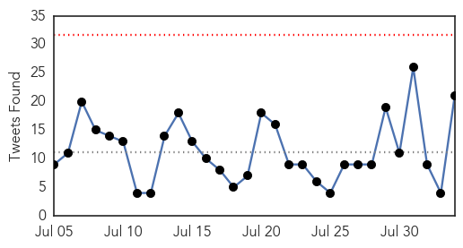
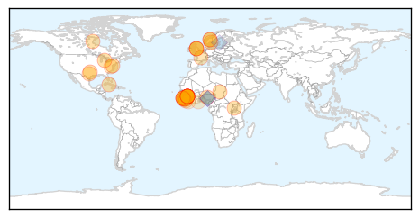

Ebola
30-Day Web Trend
1 alerts, 0 warnings

30-Day Twitter Trend
0 alerts, 0 warnings

Article Locations
Article Confidences
Top Articles:
- 1.000
- WHO declares end of Ebola outbreak in Sierra Leone, but neighbor Guinea struggles to end virus
- 1.000
- Will Ebola Vaccine Be The Cure Africa Needs?
- 1.000
- Sierra Leone records two new cases of Ebola
- 1.000
- Sierra Leone concerns grow from new case, as CDC head visits
- 1.000
- Sierra Leone Concerns Grow as CDC Head Visits
- 0.999
- Ebola vaccine completely effective, say researchers
- 0.999
- CDC head says Sierra Leone in strong place with Ebola
- 0.999
- A look at Ebola treatment in the US by numbers
- 0.998
- Kaleidoscope of the International Conference on Africa’s Fight Against Ebola, Malabo, Equatorial Guinea
- 0.997
- Ebola vaccine appears to be highly effective, could be ‘a game-changer’ — Health — Bangor Daily News — BDN Maine
- 0.997
- How the global community fast-tracked an ebola vaccine
- 0.997
- Breakthrough in quest for Ebola vaccine
- 0.996
- Norwegian-led Ebola vaccine study shows promising results in Guinea
- 0.995
- After Ebola criticisms, WHO plans for 4-month epidemic response
- 0.994
- Ebola vaccine trial successful in Guinea SouthEast ASIA News
- 0.994
- Vaccine success holds hope for end to deadly scourge of Ebola
- 0.991
- Ebola Outbreak Again in Sierra Leone; 624 People Quarantined Following A Death
- 0.990
- Ebola Vaccine Works, Offering 100% Protection In African Trial
- 0.990
- Ebola Vaccine Hailed As 'Game Changer' In Fight Against The Virus
- 0.987
- A new Ebola vaccine shows promise. But there's good reason for caution.
- 0.986
- Rebuilding African Societies Is The Long Term Solution To The Healthcare Crisis
- 0.986
- CDC's top modeler courts controversy with disease estimate
- 0.985
- Good News! Ebola Vaccine Works, Offering 100% Protection In African Trial
- 0.984
- Ebola vaccine shows promising results
- 0.978
- Ebola Prevention Vaccine Trial Deemed 100 Percent Effective
- 0.976
- Ebola: The Transformation of Redemption Hospital
- 0.960
- Dr. Rashida Kamara Distributes IPC Supplies to Hospitals
- 0.948
- Study will test survivors’ blood to treat Ebola
- 0.946
- World on the verge of an effective Ebola vaccine
- 0.914
- Promising Results from Ebola Vaccine Trial
- 0.866
- Restore Hope is hosting post Ebola strategies summit in Texas
- 0.856
- More than 70,000 children born during the Ebola outbreak in Liberia at risk of exclusion if not registered, warns UNICEF
- 0.834
- A little girl in Liberia has thanked science for Ebola vaccine
- 0.775
- Red Cross radio helps communities in Guinea guard against Ebola
- 0.755
- Offices inside Woodbridge medical building quarantined during Ebola scare
- 0.745
- Welcome to the Expotimes News
- 0.577
- Border Officials Receive Training in Ebola Prevention
- 0.564
- The Deceptive face of Religion in Sierra Leone
- 0.546
- Ellen extols members of the Diplomatic Corps
Top Tweets:
- 0.984
- WHO meeting on survivors of Ebola virus disease: Clinical care, research, and ... - World Health O... http://t.co/szvyu98HdC ebola EVD
- 0.982
- A Legionnaires Disease Outbreak, An Ebola “Game-changer” and more from Doctor ... - WGN Radio http://t.co/a623Q6lnUb ebola EVD
- 0.949
- CDC head says Sierra Leone in strong place with Ebola - Yahoo News http://t.co/hg42pooXov ebola EVD
- 0.949
- CDC head says Sierra Leone in strong place with Ebola - Yahoo News http://t.co/0d3VQJVaic ebola EVD
- 0.942
- OraSure lands emergency authorization for Ebola test - WFMZ Allentown http://t.co/34rL2vfxAC ebola EVD
- 0.940
- WHO meeting on survivors of Ebola virus disease: Clinical care, research, and ... - World Health Organization http://t.co/E1VQjHoAhr
- 0.935
- Sierra Leone's Ebola aid workers bear the deep mental scars of haunting deaths - The Guardian http://t.co/LlHWseNSvQ ebola EVD
- 0.929
- A little girl in Liberia has thanked science for Ebola vaccine - Irish Examiner http://t.co/SmDW7XzXE2 ebola EVD
- 0.921
- CDC head says Sierra Leone in strong place to deal with Ebola as concerns grow ... - U.S. News & W... http://t.co/j6l6csu3N2 ebola EVD
- 0.907
- Head of CDC in Sierra Leone as concerns grow from new Ebola case - CTV News http://t.co/Snn8teMTRV ebola EVD
- 0.907
- Head of CDC in Sierra Leone as concerns grow from new Ebola case - CTV News http://t.co/Ce65G6D97L ebola EVD
- 0.905
- FDA grants OraSure key status for rapid Ebola test - Allentown Morning Call http://t.co/k2ivh41l4q ebola EVD
- 0.830
- Ebola testing kit developed in Dundee factory - The Courier http://t.co/XOAgPW8vBQ ebola EVD
- 0.799
- HuffPost What's Working Honor Roll: We May Finally Have An Ebola Vaccine That ... - Huffington Post http://t.co/ZJfps8iGBq ebola EVD
- 0.783
- The Race to Zero: Looking for the Last Ebola Patients in Liberia - VICE News http://t.co/aHvM01WsqE ebola EVD
- 0.753
- A Brief Look At Guinea, Liberia and SierraLeone in Tackling the Ebola Health Crisis http://t.co/IxitmEDm6Z liberia via
- 0.752
- Orasure Technologies Receives FDA Emergency Use Authorization for Ebola Rapid ... - Nasdaq http://t.co/9idzAxoiWC ebola EVD
- 0.752
- Orasure Technologies Receives FDA Emergency Use Authorization for Ebola Rapid ... - GlobeNewswire ... http://t.co/rPNUkryjY9 ebola EVD
- 0.728
- Quick Opinion: Experimental vaccine against Ebola has been promising - http://t.co/GBHBu9XCUw http://t.co/hgdVgTLgq4 ebola EVD
- 0.696
- RT: An Ebola vaccine will not eradicate the disease but will likely be a key tool in future outbreaks. Read ECDC comment http://t…
- 0.686
- Health Experts Call For $2Billion Fund To Develop Ebola Vaccine, Other crucial Shots http://t.co/GXdoyyZtg5 Africaagainstebola
- 0.674
- Recently met Ibrahim and Chernoh, med students in Sierra Leone who volunteer with CDC’s Ebola responders. http://t.co/Ua8X7OtP1w
- 0.671
- Ebola: The epidemic's timeline http://t.co/SGoMlBhHgR via
- 0.644
- Red Cross radio helps communities in Guinea guard against Ebola - International Federation of Red ... http://t.co/0tLx4bQcr7 ebola EVD
- 0.628
- CDC head says Sierra Leone in strong place with Ebola - Yahoo News http://t.co/MHgOwCXTq3
- 0.600
- RT: Communication of risk in disease outbreaks too often neglected; that must change. MERS Ebola http://t.co/29c5fUa8Mo http:…
- 0.598
- CDC head says Sierra Leone in strong place to deal with Ebola as concerns grow ... - U.S. News & World Report http://t.co/FQY8swteup
- 0.586
- Sierra Leone's Ebola aid workers bear the deep mental scars of haunting deaths - The Guardian http://t.co/jtxflpvBvg
- 0.526
- Head of CDC in Sierra Leone as concerns grow from new Ebola case - CTV News http://t.co/zxLyftYD7h
Mumps
30-Day Web Trend
6 alerts, 0 warnings

30-Day Twitter Trend
0 alerts, 0 warnings

Article Locations

Article Confidences

Top Articles:
Top Tweets:
-
No tweets found for Aug 03, 2015